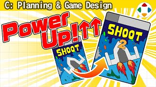
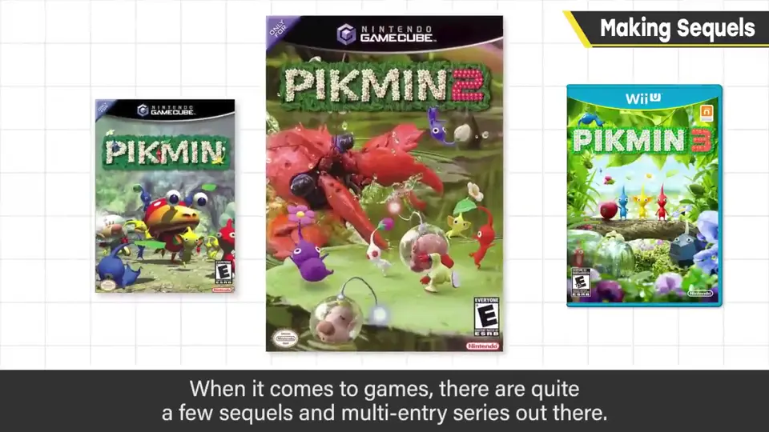
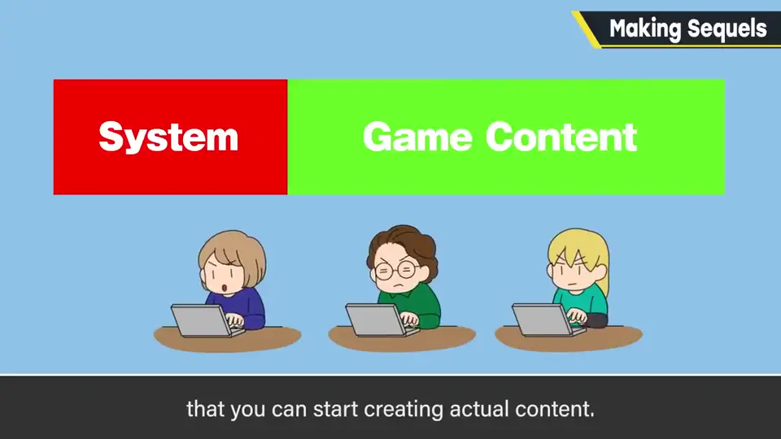
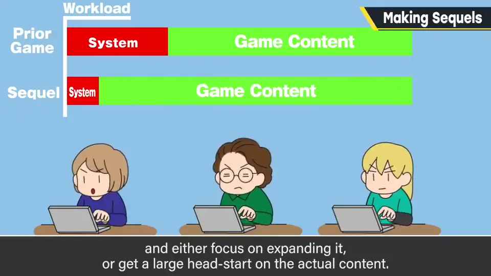
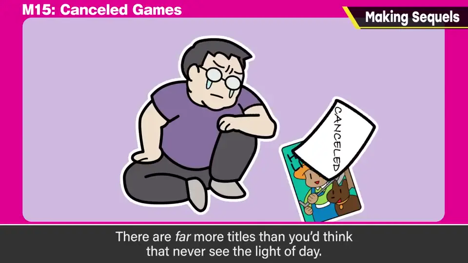
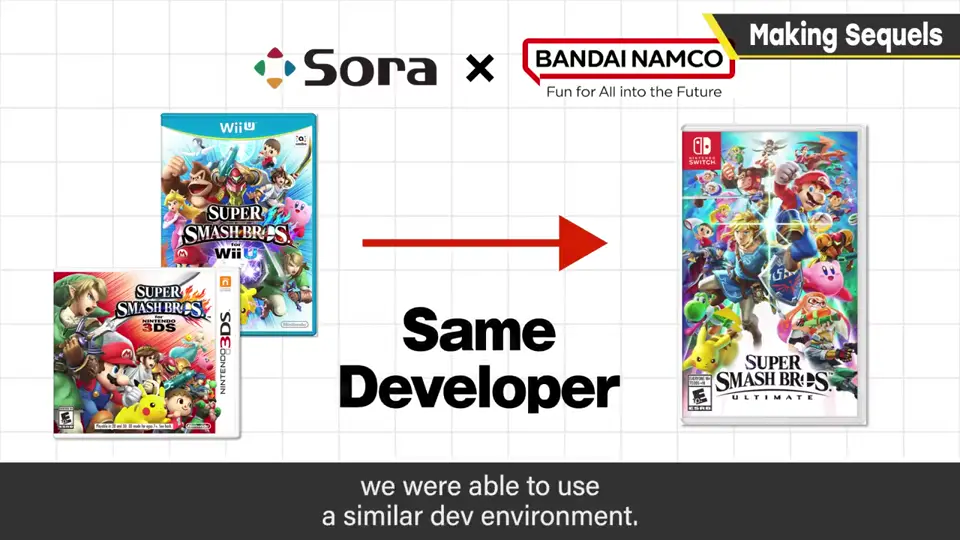
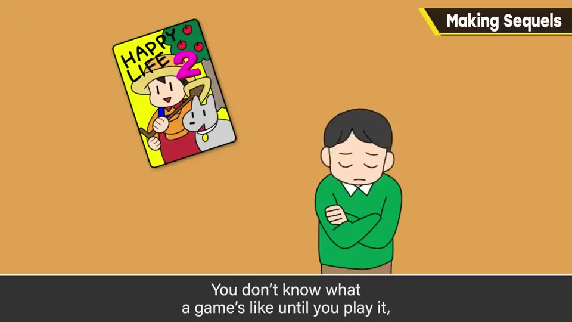
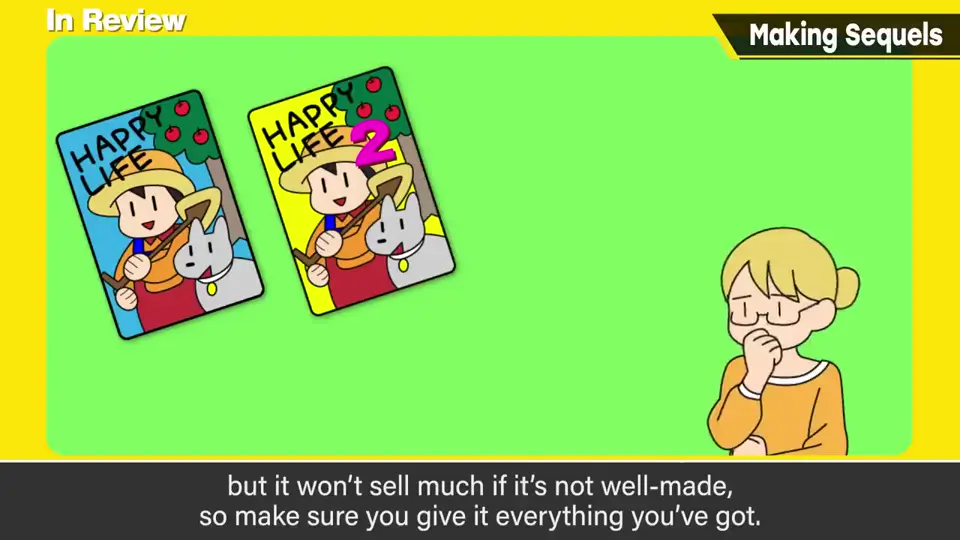

速览
人气作会出续作或系列，但照原样出的话，销量大约会减半，奇特作风更严峻。电子游戏整体续作和系列作很多，原因很多，樱井认为最大的理由是游戏需要开发游戏系统：影像作品续作的内容几乎全部新起，第一作第二作都一样；游戏则先要有基础系统的开发与无矛盾的构建，然后才能开始做内容——基础机制还包括开发工具，充实内容前需要大量劳力。所以续作能改良已建好的系统、专心充实内容，或大幅领先起步，这很大。而且游戏制作不像影像制作那样能在开始时读剧本共享完成形，不做完不知道有不有趣。续作不只是宣传上有利，还有各种机制上的优势；全新作品开发中止的风险也更大——没面世的作品远比顾客以为的多。（《大乱斗》每次团队都不同，虽说是续作也要连系统一起重做；只有 4 与特别版开发团队相同，能在相似环境中推进。）回到销量：买第一作是因为觉得好像能玩得开心；续作的销量与第一作的完成度有关——游戏不玩不知道，前作吃过亏，买下一作的意愿就降低。第一作玩到最后还是半途而废，取决于内容和人。续作推出时，最好前作让人觉得开心、还想再玩；与前作规模、内容几乎相同，就像已经分出胜负的游戏，不太想玩；更重要的是要让人觉得比第一作更好玩、有所强化。结论：续作让制作变得有利，但不认真做就卖不动，要好好投入。樱井本人不执着于做系列作——做新作和做系列作各有意义与价值；做不做续作取决于委托者的希望，踏实完成接下的工作才是第一位。
1. 照搬续作，销量约减半 0:03
人气作会推出续作或系列。但如果只是照原样出，销量大约会减半——作风越奇特越严峻。

2. 为什么游戏续作多 0:20
电子游戏整体续作和系列作都很多，理由有很多，樱井认为最大的理由是：游戏需要开发游戏系统。
影像作品的续作，内容几乎全部新起；第一作、第二作都一样。游戏则先要有基础游戏系统的开发和无矛盾的构建，然后才能开始制作内容。基础机制还包括开发工具，充实内容之前需要大量劳力。



此外，游戏制作不像影像制作，难以在项目开始时读剧本、共享完成形——不做完不知道好不好玩。所以续作不只是宣传上有利，制作机制上也有各种优势；而全新作品开发中止的风险也更高——没能面世的作品，远比顾客以为的多。
《大乱斗》的情况是每次团队都不同，虽是续作，却要连系统一起重做；唯一例外是 4 与特别版之间开发团队相同，能在相似环境中推进。

3. 续作的销量取决于什么 2:00
回到开头：买第一作，是因为觉得好像能玩得开心。续作的销量与第一作的完成度有关——游戏不玩不知道，前作让人吃过亏，买下一作的意愿就会下降。


第一作玩到最后还是中途放弃，取决于内容和玩家。续作推出时，最好前作让人觉得开心、还想继续玩。与前作规模和内容几乎相同，就像已经分出胜负的游戏，不太想玩。
4. 樱井对续作的态度 3:18
能玩到更多好玩的游戏，樱井很高兴，也感谢制作方。他本人不执着于做系列作：做新作与做系列作，各有其意义与价值。做不做续作，取决于委托工作的人是否希望；踏实做好接下的工作才是第一位。
自测题
1. 樱井认为游戏续作多的最大理由是什么？
游戏需要开发系统（含工具），续作可沿用已建好的系统，改良并专心充实内容。 0:20
2. 照搬前作的续作会怎样？为什么？
销量约减半；规模内容相同就像已分出胜负的游戏，不太想玩。 0:03
3. 续作要卖得好需要什么？
前作让人满意、还想玩；且续作要让人觉得比第一作更好玩、有所强化，并认真投入制作。 2:38